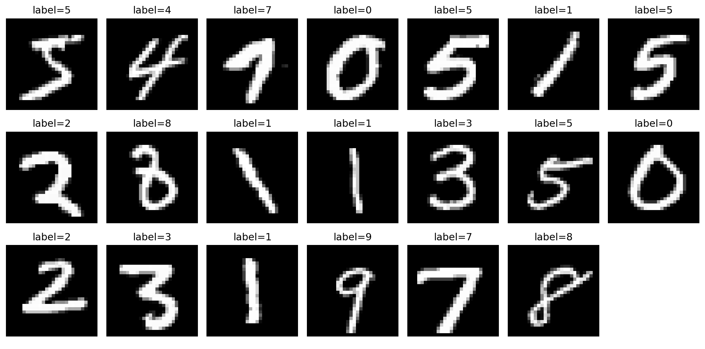

用小型卷积网络识别手写数字
这份参考答案按照 Notebook 中的数据读取、归一化、模型补全、训练和评价顺序整理。每一段代码先说明输入和输出，再给出可以直接运行的写法。
参考答案仅做参考，并非代表唯一正确结果，效果以运行结果为准，具体代码形式可自行调整。
打开公开 Kaggle Notebook 后，先复制到自己的账户，再修改 TODO 位置并运行。下面按步骤给出参考代码、说明和结果，便于阅读与核对。
数据读取后先核对张量形状和标签
单张图像的 shape 是 [1, 28, 28]：1 个灰度通道、28 个像素高、28 个像素宽。像素经过 ToTensor 后位于 0 到 1，标签覆盖 0 到 9。

sample_image, sample_label = train_full[0]
sample_count = len(train_full)
image_shape = tuple(sample_image.shape)
image_dtype = str(sample_image.dtype)
pixel_min = float(sample_image.min())
pixel_max = float(sample_image.max())
all_labels = torch.tensor([int(train_full[i][1]) for i in range(len(train_full))])
class_counts = torch.bincount(all_labels, minlength=10)归一化参数只从训练子集计算
均值和标准差不能从验证集或测试集反推。本页采用的训练均值为 0.1307254845、训练标准差为 0.3081756846，三个数据集都使用这两个参数。
stat_loader = DataLoader(train_dataset, batch_size=256, shuffle=False)
pixel_sum = 0.0
pixel_sq_sum = 0.0
pixel_count = 0
for images, _ in stat_loader:
pixel_sum += images.sum().item()
pixel_sq_sum += (images ** 2).sum().item()
pixel_count += images.numel()
train_mean = pixel_sum / pixel_count
train_std = (pixel_sq_sum / pixel_count - train_mean ** 2) ** 0.5
def normalize_batch(images):
return (images - train_mean) / (train_std + 1e-8)卷积模块把图像变成十类 logits
第一组卷积将通道数变为 16，并通过池化得到 14×14 特征图。第二组卷积变为 32 个通道，再次池化后得到 7×7；全连接层将这些特征映射到 10 个数字类别。
self.features = nn.Sequential(
nn.Conv2d(1, 16, 3, padding=1),
nn.ReLU(), nn.MaxPool2d(2),
nn.Conv2d(16, 32, 3, padding=1),
nn.ReLU(), nn.MaxPool2d(2))
self.classifier = nn.Sequential(
nn.Flatten(),
nn.Linear(32 * 7 * 7, 64),
nn.ReLU(), nn.Linear(64, 10))输入先经过归一化，再送入卷积层；分类层输出未经 softmax 的 logits，交叉熵损失会直接处理它们。
每个训练批次按固定顺序更新参数
一个批次依次清空旧梯度、前向计算、得到交叉熵损失、反向传播，再由 Adam 更新参数。每轮训练结束后在验证集上记录损失和准确率，测试集暂时不参与模型选择。
optimizer.zero_grad()
logits = model(images)
loss = criterion(logits, labels)
loss.backward()
optimizer.step()
训练与验证指标均已保存
验证准确率 0.9891111
模型选择不使用测试集
在独立测试集上计算最终指标
载入验证集表现最好的模型后，才在 10,000 张测试图像上计算准确率、macro-F1 和混淆矩阵。macro-F1 让每个数字类别获得相同权重。
CrossEntropyLoss
0.9897 / 10,000
0.9896499820

每个数字类别的 F1
| 数字 | F1 | 数字 | F1 |
|---|---|---|---|
| 0 | 0.9944077 | 5 | 0.9876265 |
| 1 | 0.9947230 | 6 | 0.9921342 |
| 2 | 0.9868868 | 7 | 0.9897511 |
| 3 | 0.9848707 | 8 | 0.9886831 |
| 4 | 0.9928934 | 9 | 0.9845232 |
test_loss, test_acc, y_true, y_pred = evaluate(model, test_loader)
macro_f1 = f1_score(y_true, y_pred, average='macro')
per_class_f1 = f1_score(y_true, y_pred, average=None)
cm = confusion_matrix(y_true, y_pred)加入噪声后重新观察同一个模型
这里不更新模型参数，只向测试输入加入标准差为 0.25 的高斯噪声，并把像素裁剪回 0 到 1。这样比较的是输入扰动带来的变化。
输入扰动强度
0.9771
0.9897 − 0.9771 = 0.0126
noisy_loss, noisy_acc, _, _ = evaluate(
model, test_loader, noise_sigma=0.25)
accuracy_drop = test_acc - noisy_acc先查看输入和预测是否逐个一致
下面固定抽取测试集中的 20 个位置，把真实输入、真实标签和模型预测放在同一张图里。绿色表示预测与标签一致，置信度来自 softmax 后的最大类别概率；这组样本为 20/20 一致。

单变量对照的填写方式
如果完成 Notebook 的拓展任务，只改学习率或通道数中的一个条件，并保持数据划分、模型结构和训练设置不变。对照结果应来自重新训练后的模型，不要把尚未重新训练的数字写入测试指标。
comparison = {
'changed_variable': 'learning_rate',
'baseline_value': 1e-3,
'new_value': 1e-2,
'baseline_best_val_accuracy': float(best_val),
'new_best_val_accuracy': float(new_best_val),
}结果文件
答案页引用的图像和 JSON 都位于站内项目 00 的结果目录，与上面的代码、图像和指标相互对应。
task0_data_visualization.png
task0_training_curve.png
task0_confusion_matrix.png
task0_input_prediction_comparison.png
task0_result.json
复核要点JSON 中的 epochs、history、测试指标、噪声指标和对比样本记录与上述图像及文字保持一致。